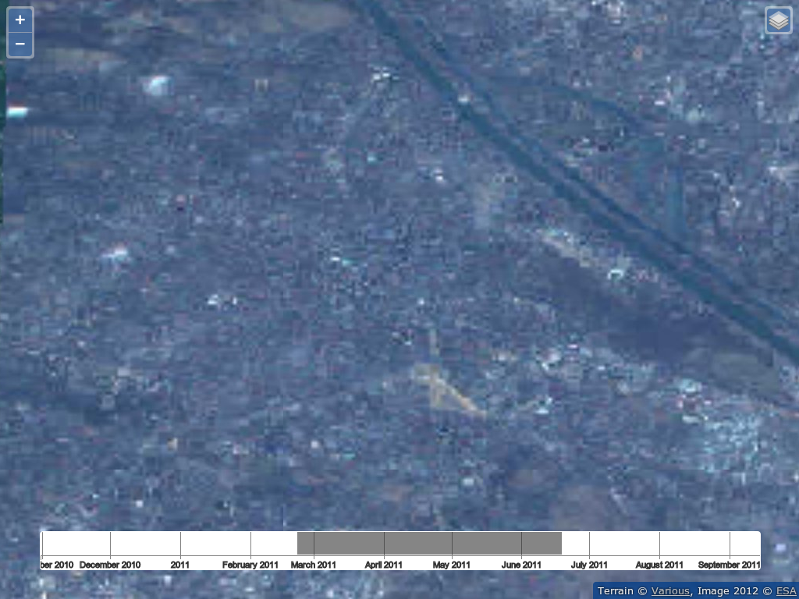

ESA Dienste für Nutzer von Erdbeobachtungsdaten basierend auf Open Source
Stephan Meißl stephan.meissl@eox.at @Schpidi
 This work is licensed under a Creative Commons Attribution-ShareAlike 4.0 International License.
This work is licensed under a Creative Commons Attribution-ShareAlike 4.0 International License.
Inhalt
- ESA User Services - ngEO
- EOX Maps
- EU-DEM
Live Demonstration ngEO
Suche
Suche Details
3D
ESA User Services - ngEO
- Operationales Service für den Online Zugang zu EO Daten
- Daten von GMES und ESA Satelliten Missionen
- Generisches System zur generellen Verwendung
ngEO Browse Server - Architektur

Verarbeitung von Rasterdaten
- Geographische Metadaten für die Geo-Referenzierung
- Polygon des Grundrisses
- Reguläres Gitter von Referenzpunkten
- Geo-referenzierte Bilder
- Optimierungen
- Berechnung des Grundrisses
- Umprojizieren
- Hinzufügen eines Alpha-Bandes
- Interne Kachelung
- Übersichtsbilder
- Komprimierung
Live Demonstration EOX Maps
Zeitachse / Time Slider

Gesamter EO Datensatz

Wien
Wien & EO
max-cached-zoom
EOX Maps
- Open Data
- Open Source Software
- Start in Vorbereitung
- Nähere Informationen
- http://maps.eox.at
- @eox_a auf Twitter
Live Demonstration EU-DEM
Download
Downloaded
EU-DEM
- INSPIRE View & Download Service Prototyp
via WMS/WMTS und WCS - Verfügbar als Open Data
Fazit
- Es existieren ausgereifte Open Source Software Komponenten bereit für den operationalen Einsatz
- Anpassungen und Erweiterungen sind in Open Source Software Komponenten äußerst einfach möglich
- Neue Funktionalität fließt zurück und steht allen zur Verfügung
- Open Data verfügbar
- Die Zeitachse ist und wird immer wichtiger
Danksagung
Die Europäische Weltraumorganisation (ESA) hat im Rahmen des ngEO Projektes dazu beigetragen die verwendeten Open Source Lösungen maßgeblich weiterzuentwickeln.
Vielen Dank für Ihre Aufmerksamkeit
Stephan Meißl stephan.meissl@eox.at @Schpidi
This work is licensed under a Creative Commons Attribution-ShareAlike 4.0 International License.